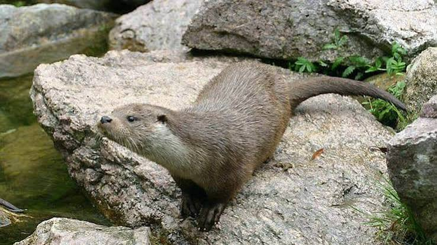

Loutres
du GardonLe retour discret d’une espèce protégée


⟹ Sites Emblématiques ⟸
Une présence ancienne, longtemps invisible. La loutre d’Europe (Lutra lutra) est un mammifère semi-aquatique indigène des rivières européennes. Son corps allongé, ses pattes palmées et sa fourrure dense lui permettent de chasser dans l’eau, même froide. Dans le Gard, les torrents cévenols, les Gardons et leurs affluents forment un réseau de corridors potentiels. Mais la loutre, essentiellement crépusculaire et nocturne, laisse rarement au promeneur la chance de la voir : sa présence est bien plus souvent révélée par ses traces.
Des rivières autrefois riches et très exploitées. Avant les grands aménagements modernes, les cours d’eau du territoire étaient déjà utilisés pour la pêche, les moulins, l’irrigation et le transport local. La loutre partageait ces milieux avec les pêcheurs, ce qui n’a pas toujours facilité la cohabitation. Sa réputation de concurrente pour le poisson, ajoutée à la valeur commerciale de sa fourrure, a longtemps encouragé sa destruction. Cette histoire locale s’inscrit dans un déclin beaucoup plus large observé dans une grande partie de l’Europe.
Le recul spectaculaire du XXe siècle. La chasse et le piégeage ne furent pas les seules causes de sa raréfaction. Les polluants accumulés dans la chaîne alimentaire, la dégradation des berges, la disparition de zones refuges et la fragmentation des cours d’eau ont progressivement réduit ses possibilités de survie. Les routes constituent aussi un danger lorsqu’un ouvrage hydraulique oblige l’animal à quitter l’eau. Dans les années 1970, la loutre avait disparu de nombreux bassins français, tandis que des noyaux de population persistaient notamment dans l’ouest et le Massif central.

Une protection qui change progressivement la donne. L’interdiction de sa chasse en 1972, puis sa protection intégrale en 1981, ont marqué une étape essentielle. La protection légale ne suffit cependant pas à recréer immédiatement une population : la loutre se reproduit lentement, occupe de grands territoires et dépend de la continuité des milieux aquatiques. L’amélioration de certaines qualités d’eau, la conservation des berges végétalisées et la réduction des destructions directes ont rendu possible une recolonisation progressive.
Le retour par les vallées et les affluents. Depuis les populations restées présentes dans le Massif central, l’espèce a progressivement regagné des bassins versants du sud. Les Gardons constituent des axes naturels de déplacement, mais il faut éviter d’imaginer une avancée uniforme, année après année : les observations varient selon les secteurs et la qualité du suivi. Une épreinte retrouvée au bord d’un affluent prouve un passage, pas nécessairement l’installation d’une famille. Pour parler de reproduction locale, les naturalistes recherchent un ensemble d’indices concordants.
Une chasseuse opportuniste, pas seulement mangeuse de poissons. La loutre se nourrit principalement de poissons, mais adapte son menu aux ressources disponibles : amphibiens, crustacés et autres petites proies peuvent le compléter. Elle parcourt les berges, plonge, inspecte les racines et utilise des abris discrets appelés catiches. Son activité contribue au fonctionnement des écosystèmes aquatiques sans faire d’elle un indicateur infaillible de pureté de l’eau : une rivière fréquentée par une loutre peut encore subir des pollutions ou des perturbations.
Comment les naturalistes retrouvent sa trace. Les épreintes, déposées sur des rochers ou sous les ponts, servent au marquage territorial et sont particulièrement utiles au suivi. On recherche aussi les empreintes à cinq doigts, les passages dans la végétation et, plus rarement, des images prises par pièges photographiques. Les relevés doivent être interprétés avec prudence pour éviter de confondre les indices avec ceux d’autres mammifères. Ces méthodes discrètes limitent le dérangement d’un animal qui a surtout besoin de tranquillité.
Protéger le Gardon, c’est protéger ses déplacements. Dans les gorges du Gardon comme sur les tronçons plus urbanisés, la conservation des ripisylves, des zones de repos et des passages sous les routes est déterminante. Les crues méditerranéennes remodèlent naturellement les berges, tandis que les sécheresses réduisent temporairement certains habitats. Le retour de la loutre constitue une histoire encourageante de reconquête naturelle, mais sa pérennité dépend d’une gestion à l’échelle de tout le bassin, des sources cévenoles jusqu’aux confluences.
Un territoire bien plus grand qu’une berge. Une loutre n’occupe pas uniquement le lieu où l’on découvre une empreinte. Elle peut utiliser de longs tronçons de rivière, plusieurs affluents et différents refuges selon les saisons. La continuité entre les cours d’eau est donc essentielle : un pont mal conçu, une berge entièrement artificialisée ou un passage routier dangereux peut interrompre des déplacements pourtant indispensables. Les corridors végétalisés permettent aussi à l’animal de circuler plus discrètement à proximité des secteurs fréquentés par les humains.
Naissance et apprentissage des jeunes. La femelle met bas dans un abri protégé, généralement à l’écart des passages. Les petits naissent dépendants et apprennent progressivement à nager, à plonger et à capturer des proies. Cette longue période d’apprentissage explique pourquoi la tranquillité des berges compte autant que la présence de poissons. La découverte d’une loutre adulte ne suffit d’ailleurs pas à prouver qu’elle se reproduit dans le secteur : il faut des indices supplémentaires et un suivi sur plusieurs saisons.
Le Gardon, une rivière aux visages contrastés. Entre les vallées cévenoles, les secteurs encaissés et les plaines en aval, le Gardon traverse des milieux très différents. Les crues peuvent emporter la végétation et modifier les abris, tandis que les étiages estivaux concentrent parfois les poissons dans les zones encore en eau. Une loutre doit composer avec cette variabilité méditerranéenne. Préserver des zones refuges et des affluents fonctionnels lui donne davantage de possibilités lorsque certaines portions deviennent momentanément moins accueillantes.
Cohabiter sans chercher à la voir à tout prix. Le retour d’un prédateur discret suscite parfois des interrogations chez les pêcheurs et les riverains. La loutre capture surtout les proies qu’elle rencontre et son régime varie selon les milieux ; sa présence ne permet pas, à elle seule, d’expliquer une baisse locale de poissons. Pour l’observer sans la déranger, mieux vaut privilégier les sorties naturalistes encadrées et la recherche d’indices à distance. Il ne faut ni approcher une catiche ni divulguer l’emplacement précis d’un site de reproduction.